Bienvenidos
Una cabaña luminosa, atención familiar y el norte neuquino por descubrir. Tu lugar para volver y descansar en Andacollo.
Ver alojamiento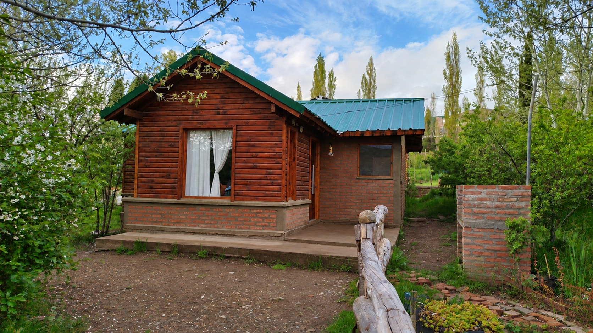
Elegí tu próxima escapada
Disponibilidad
Elegí una fecha de entrada y otra de salida. Podés llegar el mismo día en que termina otra estadía.
Calendario de prueba. Las reservas simuladas se guardan en la base de datos y se conservan al reiniciar el servidor. No hay cobros ni reservas reales.
Elegí tu fecha de entrada.
| Lu | Ma | Mi | Ju | Vi | Sá | Do |
|---|
- Disponible
- Noche ocupada
- Tu selección
Una mirada al lugar
Galería
Recorré los ambientes de El Durazno y conocé un poco de Andacollo antes de tu llegada.
Tocá una foto para verla completa. Podés avanzar a tu ritmo, sin cambios automáticos.


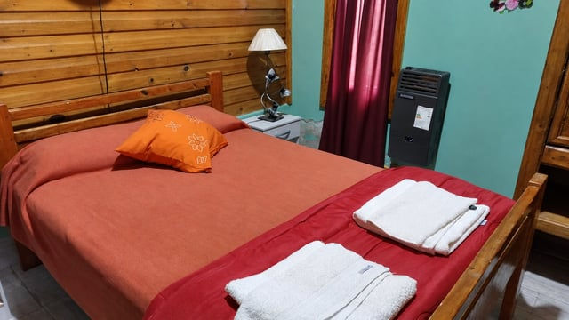

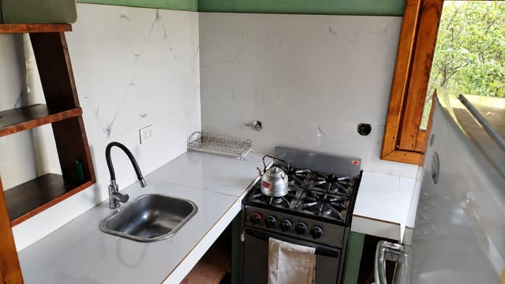

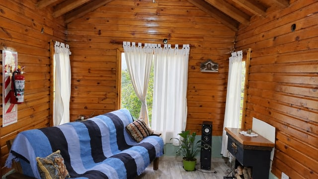

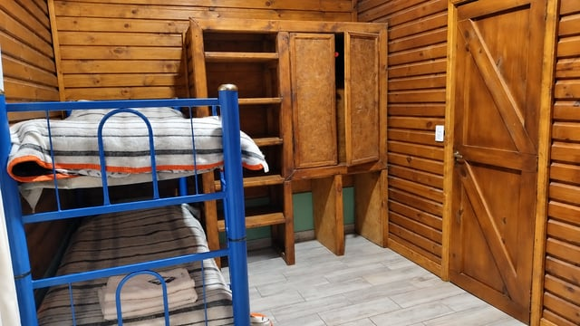

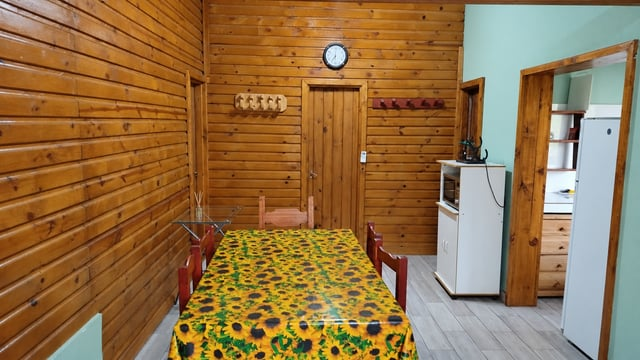
Ver las 14 fotos

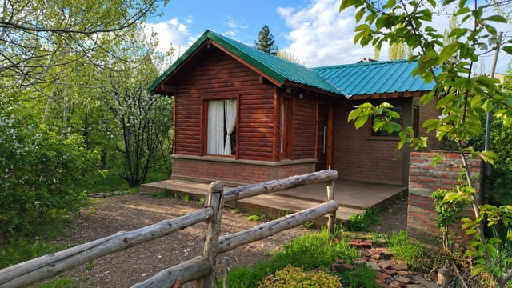

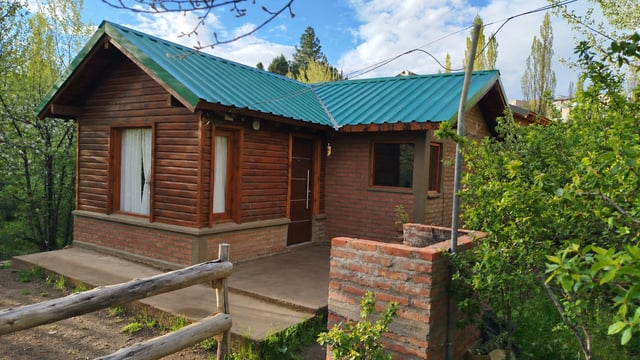

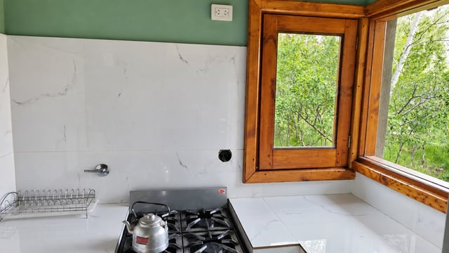

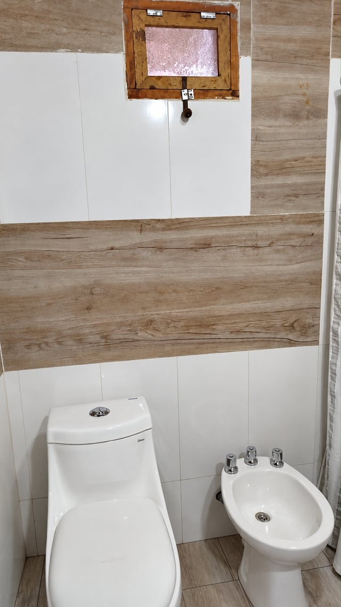

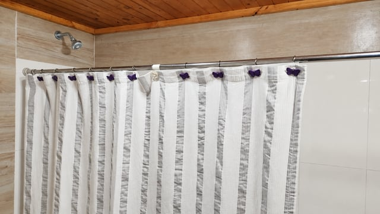

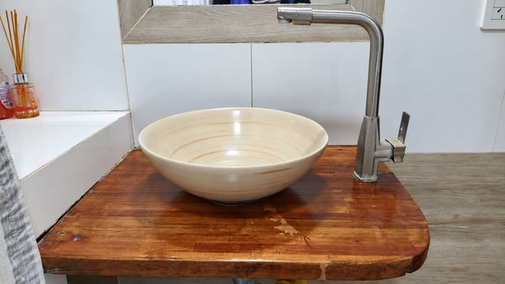

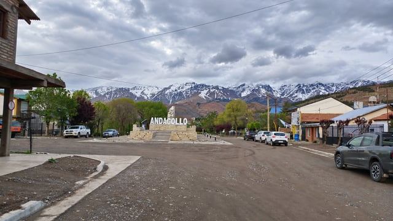

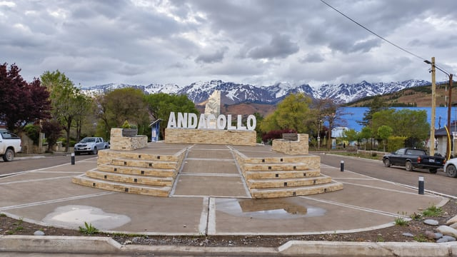
Estamos para ayudarte
Contacto
Comunicate directamente con nosotros para consultar sobre el alojamiento y organizar tu visita.
Correo electrónico
duraznoalojamiento@gmail.comTu lugar para descansar
Alojamiento
El Durazno es una cabaña amplia, acogedora y confortable, con abundante luz natural y un entorno rodeado de montañas. Cuenta con cocina, living comedor, un dormitorio matrimonial y un segundo dormitorio con camas individuales. Dispone de un baño con ducha y bidet. Tiene capacidad para cinco personas.

Norte neuquino
Ubicación
El Durazno está ubicado frente a la ruta 43, en Andacollo, en el norte de la provincia de Neuquén.
Entre paisajes de montaña e historia minera, Andacollo invita a conocer el norte neuquino. En la zona se pueden realizar caminatas, cabalgatas y recorridos fotográficos, además de visitar localidades cercanas como Huinganco, conocido como “el jardín de la provincia”.
Cómo llegar en Google Maps ↗Antes de viajar
Preguntas frecuentes
Lo que necesitás saber para organizar tu visita.
¿Con qué está equipada la cabaña?
La cabaña cuenta con calefacción y conexión wifi para acompañar tu estadía. La cocina dispone de microondas, cocina, utensilios y vajilla para preparar y disfrutar tus comidas. También incluimos ropa de cama, toallas y toallones. Actualmente, la cabaña no cuenta con televisión.
¿Para cuántas personas tiene capacidad la cabaña?
La cabaña tiene capacidad para cinco personas. Dispone de un dormitorio matrimonial y un segundo dormitorio con camas individuales, además de cocina, living comedor y baño con ducha y bidet.
¿Cuenta con patio, estacionamiento y parrilla?
Sí. El alojamiento dispone de un patio amplio, espacio de estacionamiento y parrilla, para que puedas disfrutar también de los espacios exteriores durante tu estadía.
¿Se aceptan mascotas?
No. Actualmente no se aceptan mascotas en la cabaña.
¿Cuáles son los horarios de entrada y salida?
El horario de entrada es a partir de las 14:00 y el horario de salida es hasta las 11:00. Estos horarios permiten preparar el alojamiento para recibir a los siguientes huéspedes.
¿Se pueden cambiar las fechas de una reserva?
Podés solicitar un cambio de fechas con al menos 48 horas de anticipación al horario de ingreso previsto. El cambio está sujeto a la disponibilidad del alojamiento para las nuevas fechas. Las nuevas fechas deben quedar confirmadas con el alojamiento antes de considerar modificado el período de estadía.
¿Se permiten visitas o fumar en el alojamiento?
Solo pueden ingresar las personas que se hospedan y forman parte de la reserva. No se permite el ingreso de visitantes externos.
Tampoco se permite fumar en el alojamiento.
¿Cuál es la estadía mínima?
La estadía mínima es de una noche. El ingreso se realiza a partir de las 14:00 del día de llegada y la salida hasta las 11:00 del día siguiente.
¿Cómo se realiza una reserva?
Para reservar, primero consultá la disponibilidad para las fechas de tu viaje. Se solicita una seña del 50 % del total de la estadía. Para reservas de mayor importe, las condiciones de la seña se coordinan directamente con el alojamiento antes de realizar el pago.
¿Qué medios de pago se aceptan?
Aceptamos transferencias a nuestras cuentas de Mercado Pago y Naranja. Los datos de la cuenta se facilitan de forma privada al coordinar la reserva.